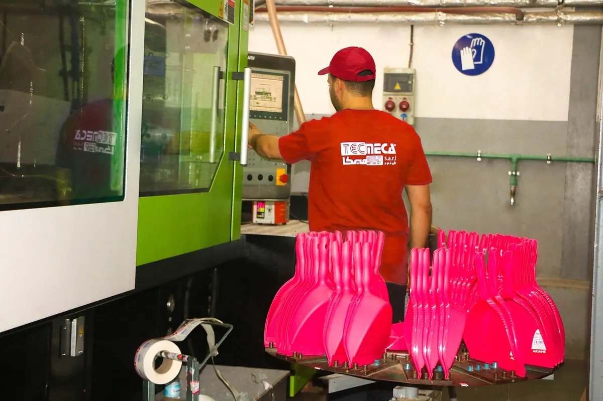

Proximité
Une entreprise ancrée en Algérie, à l'écoute des besoins réels de ses clients.
TECMECA & ARIANE
Une entreprise algérienne, des produits utiles et une ambition simple : rendre l'entretien plus facile, chaque jour.

Notre site de productionNotre histoire
Depuis plus de 25 ans, SARL TECMECA imagine et fabrique des produits d'entretien pensés pour les besoins du quotidien. À travers ARIANE, notre marque dédiée à la maison, nous proposons des accessoires pratiques, fiables et accessibles.
De la conception à la fabrication, nos équipes mettent leur expérience au service de produits qui trouvent naturellement leur place dans les foyers et chez les professionnels.
Voir nos produitsCe qui nous guide
Une entreprise ancrée en Algérie, à l'écoute des besoins réels de ses clients.
Des produits faciles à utiliser, imaginés pour simplifier les gestes du quotidien.
Plus de 25 ans de savoir-faire dans la fabrication de produits d'entretien.
Une question ? Un projet ?